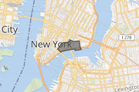
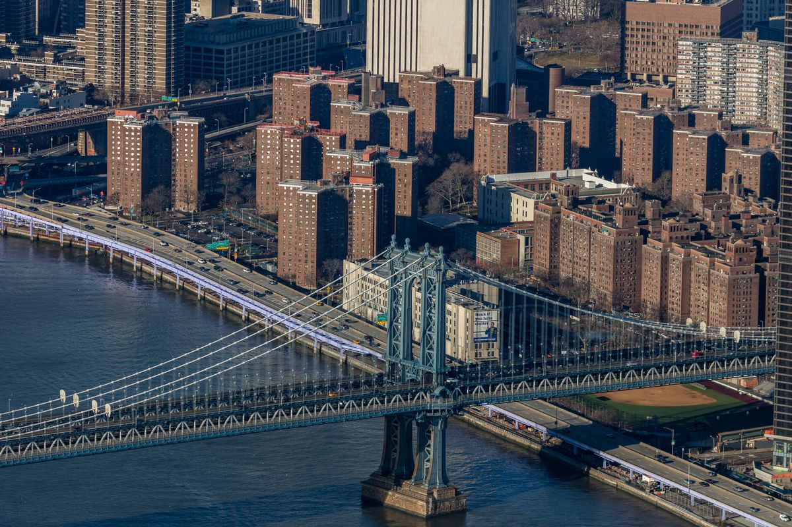

For this photojournalism project, we need to explore a specific neighborhood in the city. After nearly a year of living there, I have yet to walk out of my new apartment in the Two Bridges neighborhood. For this project, I decided to explore the surrounding area. Two Bridges is a residential neighborhood on the east bank of the East River. It is bounded by Chinatown and the Lower East Side, and it has long been home to a diverse range of immigrant communities. It is near the infamous and historic Five Points neighborhood, where Irish, Jewish, and Italian gangs fought to the death in the mid-nineteenth century. It now has a large Chinese immigrant community, and many of the buildings date from the late nineteenth and early twentieth centuries.
 